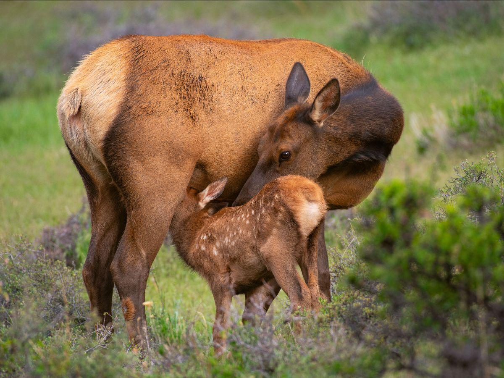

People from all over the world dream of embarking on a safari in Africa, the land of breathtaking landscapes, diverse wildlife, and rich cultural heritage. For the adventure seeker looking to experience the ultimate wildlife adventure, Africa offers an unparalleled experience that promises to be both thrilling and transformative. With its vast savannas, dense jungles, towering mountains, and expansive deserts, Africa is a continent of contrasts that beckons explorers to its wild heart.
During your safari adventure, be prepared to immerse yourself in the sights and sounds of the African wilderness. From the spine-tingling roar of a lion at dusk to the graceful movements of a herd of elephants at a waterhole, every moment on safari is an opportunity to witness the wonders of nature up close. Whether tracking the elusive leopard through the treetops or witnessing the Great Migration of wildebeest across the Serengeti plains, every day on safari is filled with new discoveries and unforgettable experiences.
In addition to wildlife viewing, a safari in Africa offers the chance to connect with the local communities and learn about their traditional ways of life. Many safari lodges and camps support local conservation and community initiatives, providing guests with the opportunity to meet with local guides, artisans, and storytellers to gain a deeper understanding of the rich cultural heritage of Africa.
As the sun sets on your final day of safari, you will carry with you memories that will last a lifetime. The African bush has a way of leaving a lasting impression on those who venture into its untamed beauty, instilling a sense of wonder, awe, and respect for the incredible diversity of life on our planet. Whether it's the thrill of a close encounter with a pride of lions or the tranquility of a sunset over the savanna, a safari in Africa is an adventure that will forever hold a special place in your heart.
For the adventurous traveler seeking an authentic safari experience in Africa, thorough preparation and planning are essential. Here is a comprehensive guide to help you make the most of your safari adventure in Africa:
Choosing the Right Destination

Africa is a land of fascinating contrasts, a continent that beckons adventurers with its diverse landscapes, vibrant cultures, and unparalleled wildlife. For those seeking an unforgettable safari experience, choosing the right destination is crucial to ensure a trip that fulfills all your wildest dreams and expectations. Whether you are a first-time safari-goer or a seasoned explorer, Africa offers a plethora of options that cater to every taste and preference.
When it comes to selecting the perfect safari destination in Africa, there are several factors to consider to make the most of your adventure. The first step is to define your priorities and interests. Are you drawn to the majestic Big Five animals, such as lions, elephants, rhinos, leopards, and buffaloes? Or do you have a particular fascination with birdlife, primates, or marine creatures? Understanding what excites you the most will help narrow down your choices and guide you towards destinations that align with your passions.
Another essential aspect to consider is the type of safari experience you are looking for. Are you seeking a luxury lodge with all the amenities and comforts, or do you prefer a more rugged and immersive camping adventure? Africa offers a wide range of accommodations, from opulent lodges and tented camps to mobile safaris and self-drive options, each providing a unique perspective on the wilderness and wildlife.
The geographical location and time of year also play a significant role in choosing the right safari destination. Africa is a vast continent with diverse ecosystems, each offering distinct wildlife viewing opportunities and seasonal highlights. For example, the open savannahs of Kenya and Tanzania are renowned for the Great Migration of wildebeest and zebras, while the lush Okavango Delta in Botswana teems with water-based wildlife year-round. Understanding the best time to visit each destination based on weather patterns, animal migrations, and other factors can greatly enhance your safari experience.
Additionally, the level of adventure and thrill you seek should influence your destination choice. Some regions in Africa are more remote and off the beaten path, offering a sense of seclusion and exclusivity, while others are more accessible and tourist-friendly. Whether you crave adrenaline-pumping activities like walking safaris, hot air balloon rides, or night drives, or prefer a leisurely game drive with plenty of rest stops for photography, there is a safari destination in Africa that caters to your sense of adventure.
In conclusion, choosing the right safari destination in Africa is a deeply personal decision that should reflect your individual interests, preferences, and comfort level. By taking into account factors such as wildlife interests, type of experience desired, timing, and level of adventure, you can ensure a safari experience that resonates with you on a profound level and leaves you with memories to last a lifetime. So, embark on this extraordinary journey with an open heart and mind, and let the wonders of Africa unfold before you as you immerse yourself in the beauty and magic of the wild.
Selecting the Right Accommodations

Choosing the right accommodation is an essential part of planning a safari adventure in Africa, where the experience can vary greatly depending on where you choose to stay. As an adventure seeker, you want to make sure your accommodation not only provides comfort and convenience but also enhances your overall safari experience.
There are several factors to consider when selecting accommodation for your African safari. The first consideration is the location of the property. Depending on the type of safari experience you seek, you may want to choose accommodation located within or near national parks or game reserves where you can easily access wildlife viewing opportunities. Staying in these areas allows you to maximize your time in nature and increase your chances of encountering a variety of animals in their natural habitat.
Another important factor to consider is the type of accommodation that best suits your preferences and budget. African safaris offer a range of options, from luxurious lodges and tented camps to more budget-friendly options such as guesthouses and campsites. Luxury lodges often provide top-notch amenities, gourmet dining, and personalized service, while tented camps offer a more immersive experience, allowing you to feel closer to nature without sacrificing comfort.
For adventure seekers looking to immerse themselves in the wilderness, tented camps and mobile safaris can provide an authentic and intimate safari experience. These accommodations often offer guided walking safaris, night drives, and other outdoor activities that allow you to explore the African bush up close and personal. Additionally, staying in tented camps allows you to fall asleep to the sounds of the African night and wake up to stunning sunrise views right from your tent.
If you prefer a more comfortable and luxurious experience, upscale lodges and safari resorts are ideal choices. These properties offer spacious rooms, fine dining options, spa facilities, and a range of amenities to ensure a relaxing and indulgent stay. Many lodges also provide guided game drives and bush walks led by experienced rangers, giving you the opportunity to learn about the local wildlife and ecosystems from knowledgeable guides.
When choosing accommodation for your African safari, it's also important to consider the environmental impact of your stay. Opting for eco-friendly lodges and camps that prioritize sustainability and conservation helps support responsible tourism practices and minimize your ecological footprint during your trip. Many eco-friendly properties in Africa participate in conservation efforts, community development projects, and wildlife protection initiatives, allowing you to contribute positively to the local environment and wildlife conservation efforts.
In conclusion, selecting the right accommodation is crucial to enhancing your safari experience as an adventure seeker. Whether you prefer a rustic tented camp deep in the bush or a luxurious lodge with all the comforts of home, there are accommodation options in Africa to suit every traveler's taste and budget. By carefully considering factors such as location, type of accommodation, activities offered, and environmental sustainability, you can ensure a memorable and rewarding safari adventure in Africa that meets all your needs and expectations.
Booking a knowledgeable safari guide

A knowledgeable safari guide can make all the difference in your wildlife viewing experience. They are not just drivers or tour leaders; they are experts in the local wildlife, flora, and fauna. They possess an in-depth understanding of animal behavior, migration patterns, and the best times and places to spot different species. Their keen eye and expert knowledge can enhance your safari experience by helping you spot elusive animals, interpret animal interactions, and appreciate the intricate ecosystems that support Africa's diverse wildlife.
When booking a knowledgeable safari guide, there are several factors to consider. Look for guides who have extensive experience leading safaris in Africa and who are knowledgeable about the specific region or national park you plan to visit. A good guide should also be a skilled communicator who can share interesting insights and stories about the wildlife and the environment, making your safari not just a visual experience but an educational one as well.
Additionally, a knowledgeable safari guide should prioritize safety and respect for the environment. They should follow ethical wildlife viewing practices, maintain a safe distance from animals, and adhere to conservation guidelines to ensure the protection of the natural habitat for future generations. Choosing a guide who is committed to sustainable tourism practices can not only enrich your safari experience but also contribute to the long-term preservation of Africa's wildlife and ecosystems.
Booking a knowledgeable safari guide is essential for adventure seekers looking to immerse themselves in the beauty and wonder of Africa's wilderness. A skilled guide can turn a good safari into an extraordinary one, providing valuable insights, unforgettable encounters, and a deeper appreciation for the natural world. So, when planning your next safari adventure in Africa, be sure to prioritize booking a knowledgeable guide who will not only lead you through the wilderness but also open your eyes to the magic and magnificence of the African continent.
Choosing the right safari activities

Africa is a continent rich in natural beauty and diverse wildlife, making it one of the most sought-after destinations for adventure seekers looking to embark on exciting safari experiences. As an adventure seeker planning a safari in Africa, choosing the right safari activities is essential to ensure you have an unforgettable and enriching experience in the wilderness.
The first step in selecting safari activities is to consider your interests, preferences, and comfort level. Africa offers a wide range of safari activities, from game drives and walking safaris to hot air balloon rides and cultural excursions. If you are a wildlife enthusiast, game drives are a must-do activity that allows you to observe wildlife up close in their natural habitat. Walking safaris, on the other hand, offer a more intimate and immersive experience, allowing you to explore the bush on foot and learn about the flora and fauna from experienced guides.
For thrill-seekers looking for a unique perspective of the African landscape, hot air balloon rides provide a breathtaking aerial view of the savannah and the wildlife below. This experience is unforgettable and offers a sense of serenity and wonder as you float above the majestic landscape. Additionally, cultural excursions allow you to immerse yourself in the local customs, traditions, and way of life of the indigenous communities living near the safari reserves.
When choosing safari activities, it is essential to consider the level of physical fitness required and your comfort with certain activities. Some safari activities, such as walking safaris and bush walks, may require a moderate level of fitness and stamina, while others, such as game drives, cater to individuals of all ages and physical abilities. It is crucial to communicate your preferences and any concerns with your safari operator or guide to ensure that they can tailor the activities to suit your needs and expectations.
Furthermore, consider the time of year and the location of your safari when selecting activities. Each season in Africa offers unique opportunities for wildlife viewing and different experiences. For example, the Great Migration in the Serengeti and Masai Mara is a spectacular event that occurs annually between July and October, attracting millions of wildebeests and zebras as they cross the plains in search of greener pastures. Planning your safari during this time allows you to witness this natural spectacle and capture incredible moments on camera.
In conclusion, choosing the right safari activities as an adventure seeker requires careful consideration of your interests, preferences, and comfort level. Whether you are a wildlife enthusiast, a thrill-seeker, or a cultural explorer, Africa offers a myriad of safari activities to cater to your sense of adventure and wonder. By communicating your preferences with your safari operator or guide and considering the time of year and location of your safari, you can ensure an unforgettable and enriching experience in the heart of the African wilderness.
Packing Essentials for Your Safari

Packing for a safari in Africa is an exciting task that requires careful planning and consideration of the unique challenges and adventures that await you in the wilderness. Whether you are embarking on a thrilling game drive in the Serengeti, tracking gorillas in the lush jungles of Uganda, or exploring the vast plains of the Maasai Mara, having the right essentials can make all the difference in ensuring a safe, comfortable, and memorable experience.
First and foremost, when packing for your safari adventure, it is important to prioritize practicality, comfort, and versatility. The key is to strike a balance between packing light and ensuring you have everything you need to make the most of your safari experience. Here are some essential items to consider packing:
Clothing
Pack lightweight, breathable clothing in neutral colors such as khaki, beige, and olive green to blend in with the natural surroundings and avoid attracting insects. Be sure to include long-sleeved shirts, pants, and a wide-brimmed hat to protect yourself from the sun and insects. Don't forget to pack a mix of warm and cool weather clothing layers as temperatures can vary throughout the day and night.
Footwear
A comfortable pair of closed-toe walking shoes or hiking boots with good traction are essential for exploring the rugged terrain of the African wilderness. You may also want to pack flip-flops or sandals for relaxing at the campsite.
Safari gear
A pair of binoculars will enhance your wildlife viewing experience by allowing you to see animals up close from a distance. A camera with a telephoto lens or a good zoom capability is also a must for capturing those unforgettable moments on your safari.
Toiletries and personal care items
Don't forget to pack essentials such as sunscreen, insect repellent, hand sanitizer, wet wipes, and any prescription medications you may need. It's also a good idea to pack a small first aid kit with bandages, antiseptic ointment, and pain relievers.
Travel documents
Make sure to pack important documents such as your passport, travel insurance information, and any necessary visas or permits for your safari adventure. Keep these documents in a waterproof pouch or bag to protect them from the elements.
Camping essentials
If you are planning to camp during your safari, be sure to pack a lightweight tent, sleeping bag, sleeping pad, and camping stove. Don't forget essential camping equipment such as a headlamp or flashlight, a multi-tool, and a camping chair for relaxing around the campfire.
Snacks and water
Staying hydrated and well-fueled is essential on a safari. Pack plenty of bottled water and energy-boosting snacks such as trail mix, energy bars, and fresh fruit to keep you energized throughout your adventures.
Additional items
Other useful items to consider packing include a daypack for carrying essentials during excursions, a lightweight scarf or shawl for sun protection and covering up in cooler evenings, and a guidebook or field guide to help you identify the flora and fauna you encounter.
Remember to pack light and only bring what you will need to avoid unnecessary bulk and weight during your safari adventure. By packing thoughtfully and including these essentials, you can ensure a safe, comfortable, and unforgettable experience exploring the wild wonders of Africa. Enjoy your safari adventure and savor every moment of this once-in-a-lifetime journey!
Respecting Wildlife and Nature
As an adventure seeker planning a safari in Africa, it is essential to approach this experience with a mindset of respect and conservation. Respecting wildlife and nature not only ensures the continued existence of these incredible environments but also allows for a more meaningful and sustainable adventure for all involved.
First and foremost, it is crucial to remember that you are a guest in the animals' home when you embark on a safari in Africa. These creatures have roamed these lands long before humans arrived, and it is our responsibility to interact with them in a way that minimizes disturbance and respects their natural behaviors. From majestic elephants to elusive big cats, each species plays a vital role in the delicate balance of the ecosystem, and our actions can have far-reaching consequences.
One of the most important ways to show respect for wildlife is to observe them from a safe distance and avoid disrupting their routines. While the thrill of seeing a lion up close or witnessing a herd of elephants crossing a river can be exhilarating, it is crucial to remember that these are wild animals with their own instincts and behaviors. Approaching them too closely or attempting to interact with them can cause stress and potentially dangerous situations for both the animals and yourself.
Furthermore, it is essential to follow the guidelines and regulations set by the national parks and conservation organizations in each region. These rules are put in place to protect the wildlife and ensure the sustainability of the ecosystems. By abiding by these guidelines, you can contribute to the preservation of these precious environments for future generations to enjoy.
In addition to respecting wildlife, it is also vital to show respect for the natural environment during your safari adventure. This means practicing Leave No Trace principles, such as disposing of waste properly, staying on designated paths, and avoiding damage to vegetation. By minimizing your impact on the environment, you can help preserve the beauty and integrity of these landscapes for years to come.
As an adventure seeker on safari in Africa, you have the incredible opportunity to immerse yourself in the beauty of the natural world and witness wildlife in their natural habitats. By approaching this experience with a mindset of respect and conservation, you can not only enhance your own adventure but also contribute to the protection of these invaluable ecosystems. Remember, the true magic of Africa lies in its wild places and the creatures that call them home – let us all do our part to ensure their survival and thriving for generations to come.
In conclusion, a safari adventure in Africa offers a thrilling and unforgettable experience for adventure seekers looking to connect with nature and witness the beauty of the continent's wildlife up close. By following this guide and embracing the spirit of exploration and conservation, you can embark on a safari journey that will leave you inspired, enlightened, and forever changed by the wonders of Africa's untamed wilderness.